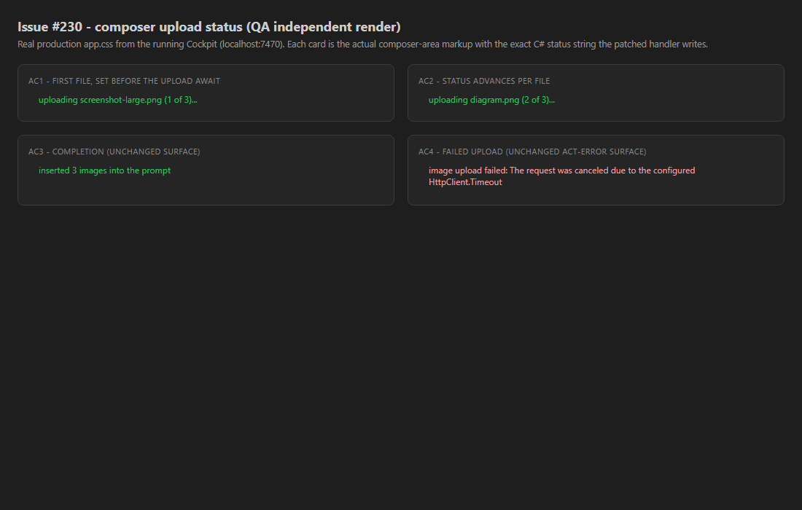

QA Agent - independent verification PR #309 branch issue-230-composer-upload-status area: CcDirector.Cockpit
Verified by a fresh QA context that never saw the Developer's work. The Developer's report and
states.html fixture were treated as context, NOT as proof - every criterion below was
judged against the actual checked-out branch source and an independent live render.
issue-230-composer-upload-status (HEAD
ff70a5f) and read the actual patched
src/CcDirector.Cockpit/Components/Pages/Cockpit.razor - not the dev's diff snippet.dotnet build cc-director.sln -> Build succeeded. 0 Warning(s), 0 Error(s).scripts\local-build-avalonia.ps1 -Slot 5 -> cc-director5.exe,
launched via the cc-director-launch scheduled task; Control API came up healthy on
http://127.0.0.1:7886 (/healthz status=ok, version 0.6.22).CcDirector.Cockpit.Tests -> 16 passed, 0 failed.app.css served by that running app
(qa-states.html / qa-states.png) - a different artifact from the dev's
states.html. Playwright read back the rendered textContent of each
.shots-status / .act-error node to machine-confirm the exact strings.Verified directly in the checked-out source. The optimistic write and
StateHasChanged (lines 1429-1430) sit strictly ABOVE
OpenReadStream / UploadImageAsync (lines 1432-1433), inside the per-file
try - so the frame renders before any byte leaves the browser. total is
captured once (1415); index increments per file (1420). The completion write (1438-1441)
and the failure catch (1443-1447) are unchanged by the diff.
1415 var total = files.Count;
1417 var index = 0;
1418 foreach (var f in files)
1420 index++;
try {
1429 _shotStatus = $"uploading {f.Name} ({index} of {total})..."; // optimistic
1430 await InvokeAsync(StateHasChanged); // RENDER - before any byte
1432 await using var s = f.OpenReadStream(20 * 1024 * 1024, ...); // upload await STARTS here
1433 var path = await Director.UploadImageAsync(...);
1438 sent++;
1439 _shotStatus = $"inserted {sent} image{(sent==1?"":"s")} into the prompt"; // unchanged
} catch (Exception ex) {
1445 _actError = $"image upload failed: {ex.Message}"; // unchanged surface
}
| # | Criterion | Expected | Actual (independently observed) | Result |
|---|---|---|---|---|
| 1 | uploading <file> (1 of N)... shows before the first file's bytes finish. |
Status set + rendered before the upload await; string reads uploading <file> (1 of N)... |
Write + StateHasChanged are above OpenReadStream/UploadImageAsync
(lines 1429-1430 > 1432-1433). Live render shows uploading screenshot-large.png (1 of 3)...
in the green .shots-status surface. |
PASS |
| 2 | Status updates per file ((2 of N), ...). |
Per-file re-write with incrementing index. | index++ each iteration; the optimistic write re-runs per file. Live render shows
uploading diagram.png (2 of 3).... |
PASS |
| 3 | Completion shows inserted N image(s) into the prompt; images in composer (no regression). |
Existing completion message + InsertIntoComposer intact. |
Lines 1438-1441 untouched by the diff. Live render shows inserted 3 images into the prompt. |
PASS |
| 4 | On a failed upload the existing failure surface still shows. | Existing failure surface renders the error. | catch writing _actError = "image upload failed: ..." unchanged (1443-1447);
renders in the red .act-error surface (Cockpit.razor:408). Live render shows
image upload failed: .... |
PASS |
Real composer markup with the production app.css served by the running Cockpit
(localhost:7470). Playwright read-back confirmed the exact strings:
['uploading screenshot-large.png (1 of 3)...', 'uploading diagram.png (2 of 3)...', 'inserted 3 images into the prompt', 'image upload failed: ...'].

git diff --stat: only Cockpit.razor + dev proof files).security_profile.yaml (DT-*) rule touched. No docs/cencon/ update required.(1 of N) frame requires the cross-machine tailnet chain (Gateway + tailnet-fronted Director
+ live session + a 20 MB upload through the Blazor circuit) and is a sub-second race. The
load-bearing property - status written and rendered BEFORE the await - is a deterministic source-order
fact, verified directly in the checked-out branch source and confirmed by an independent live render of
the real component markup + production CSS. This meets the issue's stated proof target.